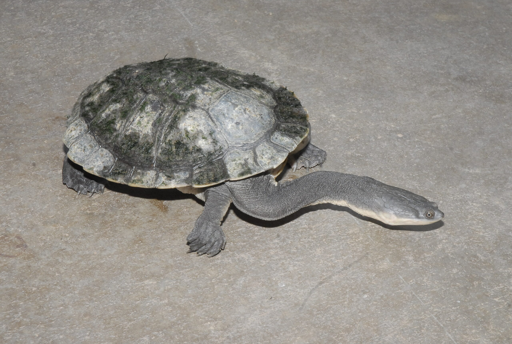
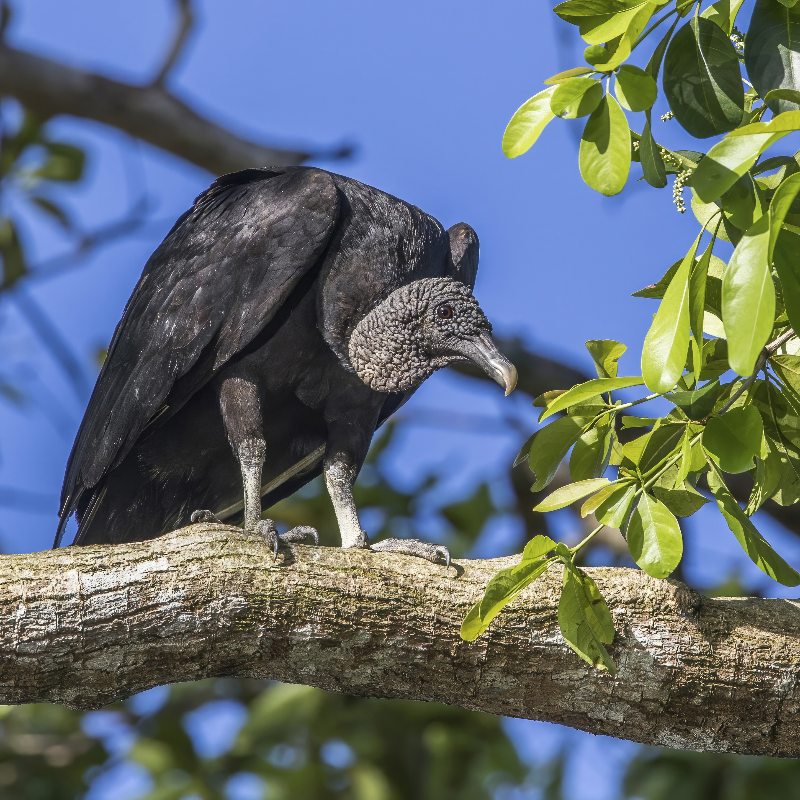
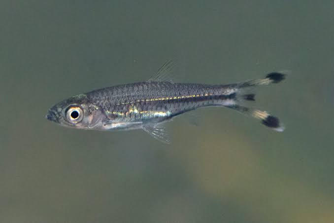

Siamang Gibbon

Symphalangus syndactylus
Conservation Status: Endangered
The largest of the gibbons, native to the rainforests of Sumatra and the Malay Peninsula. Renowned for its resonant vocalizations and inflatable throat sac.
Fresno Chaffee Zoo Species Reference Collection
This collection presents formal species dossiers for four animals exhibited at the Fresno Chaffee Zoo. Each dossier covers taxonomy, physical characteristics, habitat, ecology, and behavioral biology. Select a species link above or from the list below to access the full dossier.
Symphalangus syndactylus
Conservation Status: Endangered
The largest of the gibbons, native to the rainforests of Sumatra and the Malay Peninsula. Renowned for its resonant vocalizations and inflatable throat sac.

Chelodina longicollis
Conservation Status: Least Concern
An Australian freshwater turtle with an extraordinarily long neck that may equal or exceed the length of its entire shell. Capable of overland travel between water bodies.

Coragyps atratus
Conservation Status: Least Concern
A highly social New World scavenger distributed from the eastern United States through South America. Identifiable by its bare gray head and white wing patches visible in flight.

Rasbora trilineata
Conservation Status: Least Concern
A schooling freshwater fish from Southeast Asia, named for its deeply forked tail fin with bold black and yellow markings that resemble an open pair of scissors.